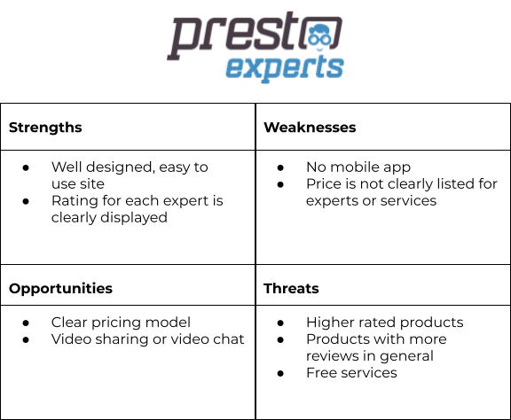
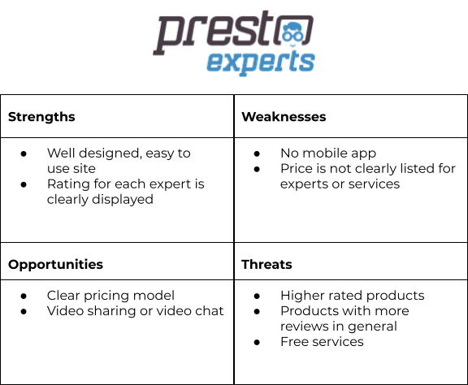

Backyard Bosses

Design a mobile app to allow homeowners to instantly connect with an Expert so they are able to complete their backyard projects. As a solo UX designer, I was responsible for the creation of Backyard Bosses from start to high fidelity prototype.
The Design Process
Methods + Tools
- In-person and Remote User Interviews
- Surveys with Google Forms
- Card Sorting with Optimal Workshop
- A/B Testing on Usability Hub
- Wireframes with Paper and Figma
- Prototyping in Figma
Timeline
September 2020 - April 2021
Inspiration
As a new homeowner myself, I began creating Backyard Bosses out of my own curiosities. I'm fortunate to know a variety of homeowners- from recent purchasers to long time dwellers, experimental DIYers to nervous starters, families, pet owners, party hosts, gardeners, and more. Having this network helped me start thinking about my potential user's problems more broadly. I outlined these user problems through the Double Diamond Strategy.
Problem Statement
Our backyard owners need a way to confidently begin and complete their backyard projects because they want to use the space they’ve invested in with their homes.
Solution
An app that connects users with a compatible Expert, or resource, to make their backyard more than just a lawn. Backyard Bosses will allow users to find their backyard project, by guide or video, or find an Expert. The interface will be void of distractions and allow users to focus on getting their projects done.
 

Competitive Analysis
To get a better idea of what's available on the market, I researched top competitors Just Answer + Presto Experts. Both services offer 24/7 outreach, through chat or a phone call, to verified Experts in a wide range of fields. Unfortunately, both of these also have complaints about their costs, which highlighted an opportunity for Backyard Bosses. After researching these competitors for their key objectives, overall strategy, and market advantages, I was able to create these SWOT analysis.
Surveys + Interviews
Based on the initial survey, nearly 93% of respondents admit they will give up at least half the times they start a project. Which shows that homeowners can really benefit from having a reliable resource to help them.
To get more context, I began preparing for remote interviews. First, I defined my research goals. I needed to identify the context for when a homeowner would use the app, expected content, and what was missing from existing resources.
By interviewing 3 separate homeowners, including a couple, I found key commonalities:
- Inspiration for a new project comes from seeing other's completed projects
- Help is first found from family or close friends
- Having an inaccurate time estimate for a project will discourage homeowners from completing it
User Journey + Flow
Once I understood who my users were, I began considering how they'd approach their goals. By creating user journey maps and user flows, I was laying down the foundation of the app's functionality.
Information Architecture
Backyard Bosses' Site Map evolved based on the results from an open card sort. In this original outline, the content was spread out into unique areas in the app. Based on 5 participants, the most notable feedback was the lack of a distinct “blog” or “project” space. Users expected to have these together in a single category. It makes sense that users want to look for a specific topic rather than sift through everything at once. Because of this, I moved content under common categories.
Wireframes + Mockups
Having an organized plan for user tasks and their flow, the first stage of low fidelity wireframes were sketched on paper. After sharing and gathering feedback from friends and colleagues, Backyard Bosses was ready for an upgrade. The mid-fidelity wireframes, and prototype, were built with Figma. I approached the design with the user's location in mind. As a backyard project aide, the screens needed to have high contrast to be able to be read outdoors easily. This updated mid-fidelity prototype was tested with 6 homeowners.

Usability Testing
To prepare for usability testing, I created a usability test plan. This included goals and objectives for testing, a script to keep sessions consistent and on track, and defined metrics to measure.
Six homeowners, between the ages of 29-48, participated in moderated remote testing. All participants saw the value in and were excited for this unique app. Onboarding had the most issues, but there was also trouble with the app's main purpose- finding an Expert.
To help my users, the language used throughout the app was updated to be uniform. And to keep future updates and features consistent, I also created a Style Guide, including considerations for accessibility.
Errors + Improvements
01: Users were not able to find an Expert
High Severity
Evidence:
4 of the 6 participants, a 33% success rate, were either unable or extremely hesitant in trying to locate an Expert. The average satisfaction score was 4.7 out of 7.
Solutions:
Make the Expert category the first category users see. Showing the Experts first on the home page will serve as a reminder for the app’s purpose while still showing users additional features.
02: Users preferred browsing, rather than using the Search Bar.
High Severity
Evidence:
100% of participants wanted to avoid the search bar at all costs. This led to a 0% success rate and an average score in satisfaction as 3.5 out of 7.
Solutions:
Focus on providing categories and content past the home page. This can allow users to find more than they initially came for.
03: Users wanted to use "Get Started", but not to create an Account.
Medium Severity
Evidence:
Although this only stopped 2 of the 6 participants, the body language of most participants was hesitant and lacking confidence.
Solutions:
Update the “Get Started” button to simply say “Sign up” (plus, this is a quick win!)
04: “Categories” option in the Nav Bar sends users “Home”.
Medium Severity
Evidence:
A clear Home button is vital to include as an option in the navigation bar. Along with the update to the Home screen to include Experts as the first section, this will be necessary to navigate users to the app's primary task.
Solutions:
Replace the “Categories” option in the Navigation Bar with “Home”.
Reflection + Conclusion
Backyard Bosses can always improve, and the best way to do that is with continued user testing. Throughout this process, I’ve heard of great feature suggestions and have tucked away a few ideas of my own. With this base of functionality, Backyard Bosses is also a good playground to test bells and whistles, like animation.
The biggest lesson learned from this project was to avoid unnecessary pizazz. Users come from different cultures and backgrounds, and most importantly, they’re already accustomed to apps that are on the market. Keeping the journey and guidance simple will be vital for future projects.